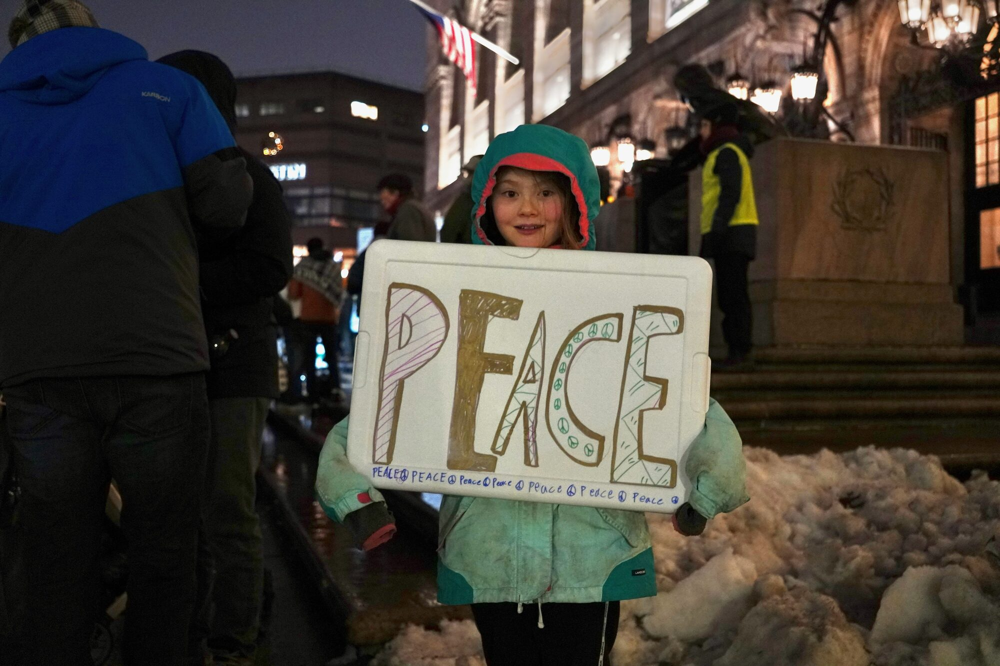
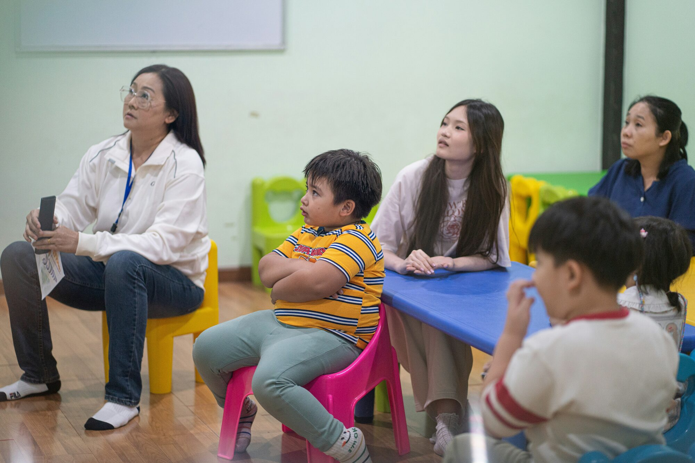

Why this matters
Schools are not just another public building. They are one of the few places in society
built specifically around the needs of children. Students do best when they feel secure
enough to show up consistently, trust adults, and stay focused on class instead of crisis.
This section explains three things: why schools should be safe places, what kinds of
pressures can undermine that safety, and how clear district policy can reduce confusion,
fear, and disruption.
At a glance
Fast facts

- Safety supports learning: students learn better when they feel physically and emotionally safe at school.
- Stress disrupts education: chronic fear and uncertainty make it harder to focus, remember, and participate.
- Trust affects attendance: when families lose trust in a school environment, attendance and engagement can suffer.
- Clear policy matters: written procedures help staff respond lawfully, calmly, and consistently during high-stress situations.
These are the quick, digestible points. Each one connects to a deeper page for readers who
want more context, examples, and supporting evidence.
Explore this section
A school cannot do its job when students are preoccupied by fear. This page will focus on
the role of schools as protected learning environments, the connection between safety and
academic success, and why trust between families and schools is essential.
Topics to include: student well-being, psychological safety, attendance, trust, and the
role of schools as community anchors.

Safety in schools can be undermined when outside conflicts, fear, or enforcement pressures
spill into school spaces. This page will explain how those threats affect students,
families, educators, and the daily stability schools need in order to function.
Topics to include: fear-driven absenteeism, family withdrawal from school contact,
disruptions to trust, and the broader effect of uncertainty on school climate.

Districts do not need to improvise when a stressful situation arises. Clear written rules
can define who handles contact with outside authorities, what documentation is required,
how student information is protected, and how families are informed.
Topics to include: judicial-warrant procedures, staff training, privacy protections,
family communication, and district-wide consistency.
Why safe schools matter in practice

Students need stability to learn
Concentration, participation, and attendance all depend on students believing school is a
place where adults will protect them and follow clear procedures.
Families need reasons to trust schools
Parents and caregivers are more likely to communicate with teachers, attend meetings, and
seek help when they believe a school is focused on education and student well-being.
Staff need clear guidance
Teachers and office staff should not be forced to guess how to respond during a high-stakes
situation. Policy reduces confusion and helps schools stay calm, lawful, and student-centered.
Detailed reading paths
Different readers care about different levels of detail. This section is designed so someone
can either absorb the basics in a minute or keep going into more focused pages.
This is a school mission issue

The central question is not whether outside institutions have power in general. The question
is whether schools will preserve conditions where children can show up, feel secure, and
learn. Any policy that strengthens safety, trust, and clarity helps schools stay aligned
with their basic mission.
That is why this issue matters: safe schools are better schools.